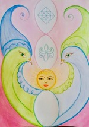

ФП ВЕСНЫ «Руки-Голуби»

8 марта 2019 года в Международный женский день уважаемый доктор Яшар Ибадов провел
интерактивный сеанс коррекции по Фазовому портрету Земли в подарок всем женщинам,
девочкам, девушкам нашей планеты.
Женщина – Мать. Женщина – Зеркало, отражающее Божественную Гармонию в земной план,
Зеркало, которое хранит в себе информацию Образа и Подобия Творца и передает ее детям,
будущим поколениям.
Сам день 8 марта (08.03) своей цифровой символической гармонией участвует в этой
коррекции. «8»-ка раскрывается в потоках света, весенней энергии – как плодородная Земля
под весенними парами для взращивания новой жизни. И из недр сути этой восьмерки
появляется молодой росток новой восьмеричной символики – на новом уровне организации
Пространства и Времени, соответствующем по сути символам, проявленным в ее эллипсах.
Изначальная Матрица и Яй-Осидо (Зеркало Жизни) — вот истинное украшение Фазового
портрета Весны!
Этот импульс к преображению восьмеричной символики задан еще одной ключевой датой –
03.03.03 (День рождения Альтернативной психологии).
8 марта: 8+3=11. Число 11 — «барабанные палочки», зеркала, в которых проявляется
тождество отображения. Эти «барабанные палочки» – 11 – представляют собой Зеркало, в
котором Творец видит Землю. А слова Земля и Мать представляют по сути единое явление
(материя как творение Бога).
И Бог (Единица — 1) как в Зеркале видит свое творение — Землю и Человечество. Через это
Зеркало устанавливается соответствие Изначальному Плану, и то, что соответствует
заданному уровню совершенства, наполняется энергией Жизни.
На ФП 8-ка прорастает на новый уровень в потоках плазмы Солнца и соединяется Ключом
(символом Жизни) с духовным миром. Это происходит и благодаря раскрытию новых
качеств материнства. А они, в свою очередь, открываются благодаря работе с ФП
«Материнство» и ФП Земли. Восьмерка в верхней части ФП Весны – гармония этих двух
фазовых систем, объединение их задач, выход на многогранность и многомерность. При
такой интерпретации можно сказать, что 8.03.2019 г. произошло рождение во времени Нового
Времени.
8-ка раскрывается на две «3» как цветок, уравновешивая зеркально прошлое и будущее. В
том, что они смотрят друг на друга и заключается сила коррекции не только записей в
масштабе планеты Земля, но и индивидуально в каждом человеке.
Мать-Земля-Женщина-Материнство-Ребенок...
Через женщину-мать очищенная в процессе коррекции информация Земли передается детям.
Восприняв и осознав этот принцип, люди могут получать коррекцию на уровне символа
Солнца – Творца, просто любуясь этим Фазовым портретом. Фазовый портрет Весны как
Зеркало, в котором Творец-Солнце видит нас, а мы – Его , и с потоками Света, солнечных
лучей работа распределяется по всем уровням, обновляя и наполняя Жизнь. Все люди на
Земле – дети своих родителей: Матери-Земли и Отца Небесного.
Фазовый портрет Весны явлен в результате многолетней коррекционной работы с ФП
«Материнство» именно 8 Марта — в праздничный день для всей Земли, всего Человечества.
Эта работа – благословение всему Человечеству на новый Путь — Путь Радости.